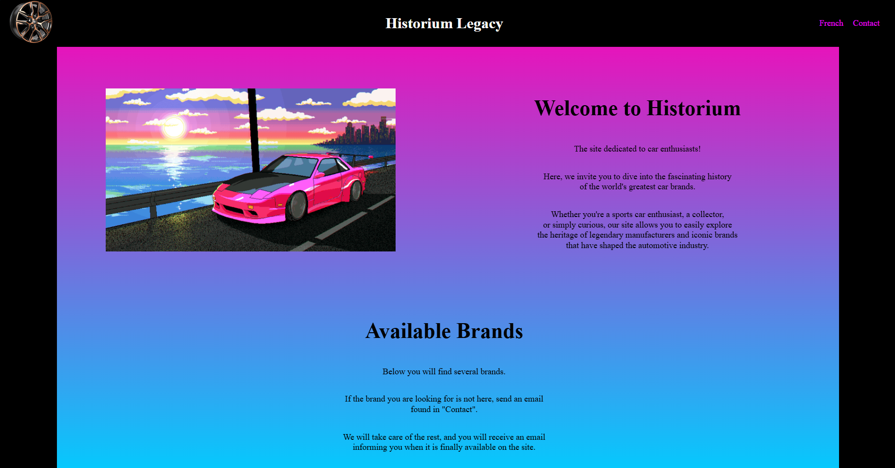
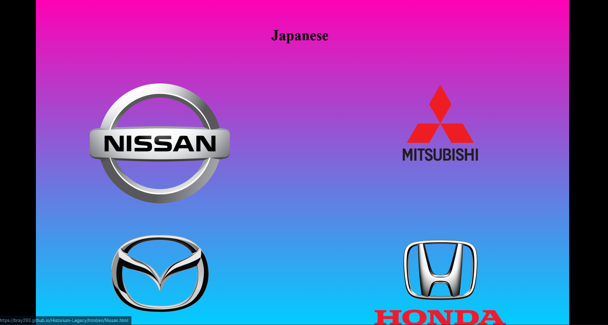
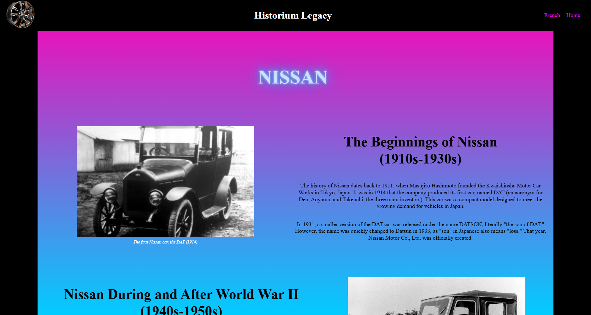

// projet 03
Site web personnel
Explication
« Historium Legacy » est un site dédié aux passionnés d'automobile : il permet d'explorer l'histoire des plus grandes marques de voitures, classées par pays d'origine (japonaises, françaises, allemandes, américaines, italiennes, britanniques...). Chaque logo renvoie vers une page dédiée à la marque. Le site est entierement réalisé en HTML/CSS pur, au debut en local puis maintenant heberger sur GitHub Pages, ce qui m'a permis de travailler la mise en page, la navigation entre plusieurs pages et la réutilisation de blocs répétés (comme les grilles de logos). Site realiser pour ordinateur seulement.
Captures d'écran



Code
<!-- Barre de navigation en haut de page -->
<div class="top-bar">
<div class="logo">
<img src="../../image/jante.png" alt="Wheel" class="mon-image">
</div>
<div class="text-top">
<h1 id="Top">Historium Legacy</h1>
</div>
<div class="menu">
<a href="../fr/Acceuil.html">French</a>
<a href="../en/contact.html">Contact</a>
</div>
</div>
<!-- Bloc répété pour chaque paire de marques -->
<div class="conteneurC">
<div class="two-images">
<a href="../en/Nissan.html">
<img src="../../image/LogoNissan.png" alt="Nissan Logo" class="image-hover">
</a>
<a href="../en/Mitsubishi.html">
<img src="../../image/Mitsubishi.png" alt="Mitsubishi Logo" class="image-hover">
</a>
</div>
</div>